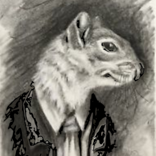
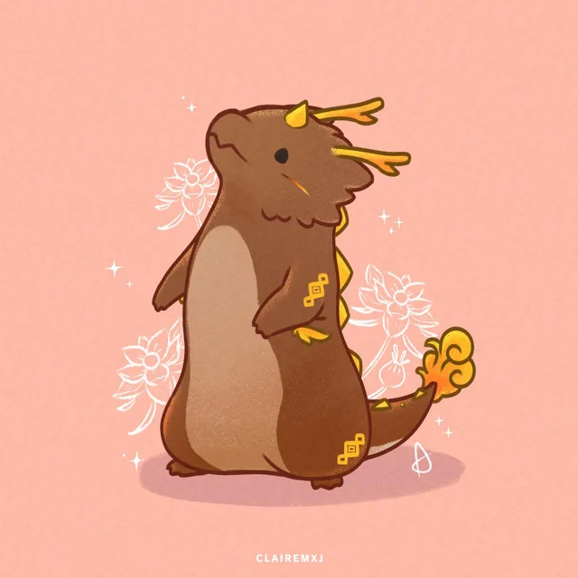

tail panda
Hey! I'm tail panda, also sometimes referred to as kia. I live in California, US, and I love talking about music and food, and of course listening and eating as well!
Typically you'll find me listening to City Girl, death's dynamic shroud, Kenichiro Nishihara, or Discoholic, to name just a few.
I also try to read, paint miniatures, and play video games, though a healthy balance is hard to achieve! My two favorite books are Sourdough by Robin Sloan, and A Tale for the Time Being by Ruth Ozeki.
I hope to be able to write about books, music and food in a way that brings them together as a single experience.
man i hate writing this type of thing i sound so snobby and disconnected please judge me by my cute hobbies like eating and reading instead of this weird bs
man i hate writing this type of thing i sound so snobby and disconnected please judge me by my cute hobbies like eating and reading instead of this weird bs